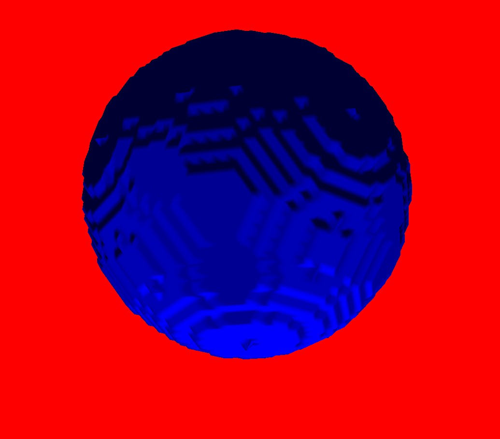
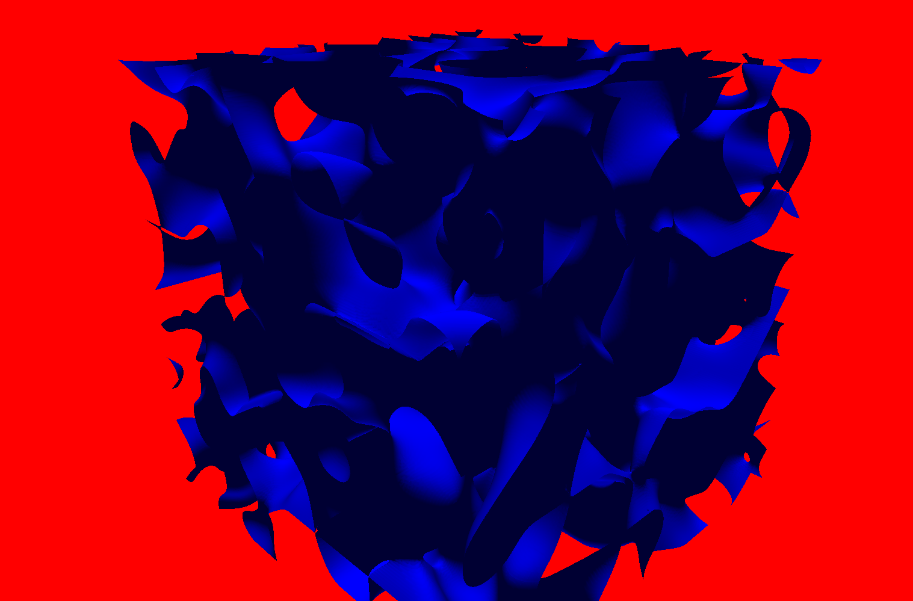
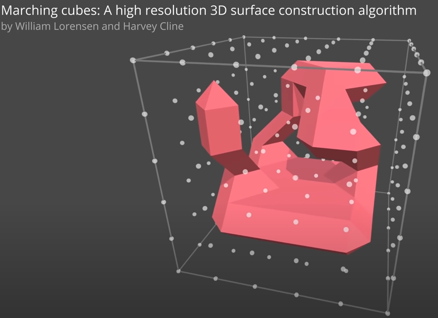

About this project
This project is a personal project that I decided to do in 3rd year. I love 3D and I had never done procedural generations of 3D terrains.
While browsing the internet I came across a video by Sebastian Lague (his project) which reproduced what I wanted to do under unity. So I challenged myself to redo a 3D planet generator from scratch. The end goal was to be able to terraform it.
For this I used the algo of marching cubes, which is perfect for terraforming. Big games like Astronner are only based around this algorithm.
The big difficulty was to do everything in openGl from scratch. I obviously reused my engine, but I had never done this algo nor raycasting, terraforming or perlin noises in 3 dimensions.
The only feature I would have liked to add were collisions with the terrain and the character to be able to move around the planet, but I intend to make a physics engine for another project.
Demo


Features
- My First big project using my 3D engine.
-
Implementation of the marching cubes algorithm as well as use of multiple 3D perlin noise to generate a good planet.
 - Implementation of raycasting as well as terraforming.
- Big optimization on the algorithm and the generation. I generate a terrain by taking into account the indices not just the vertices. I also set up a chunk system. Only my raycasting is not very optimized and my terraforming.
- I also used compute shaders to do my calculations on the GPU. I spent days trying to integrate them. I finally succeeded but unfortunately I think I am still not up to date with compute shaders. I was passing too much data between the CPU and the GPU which made the process very slow, which I therefore removed.
- I also tried to make the game a bit more beautiful with my shaders but the result is not amazing. If I resume the project I would like to add water.
Find this project

Made with


{kind=link}
{kind=link}
{kind=link}